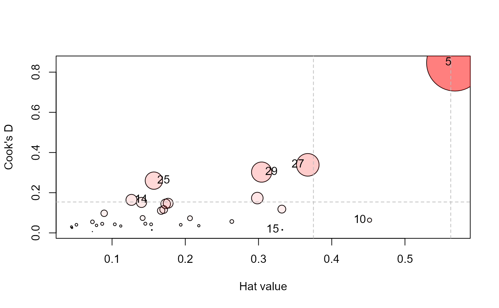
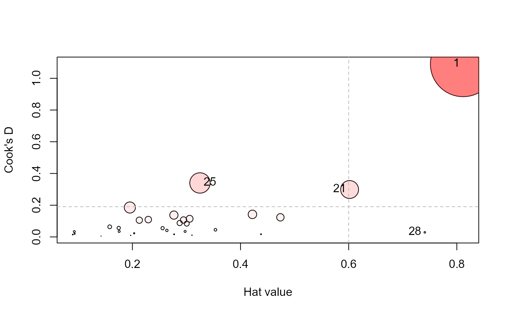

Regression Deletion Diagnostics for Multivariate Linear Models
Source:R/influence.mlm.R
influence.mlm.RdThis collection of functions is designed to compute regression deletion
diagnostics for multivariate linear models following Barrett & Ling (1992)
that are close analogs of methods for univariate and generalized linear
models handled by the influence.measures in the
stats package.
Usage
# S3 method for mlm
influence(model, do.coef = TRUE, m = 1, ...)Arguments
- model
An
mlmobject, as returned bylm- do.coef
logical. Should the coefficients be returned in the
inflmlmobject?- m
Size of the subsets for deletion diagnostics
- ...
Other arguments passed to methods
Value
influence.mlm returns an S3 object of class inflmlm, a
list with the following components
- m
Deletion subset size
- H
Hat values, \(H_I\). If
m=1, a vector of diagonal entries of the ‘hat’ matrix. Otherwise, a list of \(m \times m\) matrices corresponding to thesubsets.- Q
Residuals, \(Q_I\).
- CookD
Cook's distance values
- L
Leverage components
- R
Residual components
- subsets
Indices of the observations in the subsets of size
m- labels
Observation labels
- call
Model call for the
mlmobject- Beta
Deletion regression coefficients-- included if
do.coef=TRUE
Details
In addition, the functions provide diagnostics for deletion of subsets of
observations of size m>1.
influence.mlm is a simple wrapper for the computational function,
mlm.influence designed to provide an S3 method for class
"mlm" objects.
There are still infelicities in the methods for the m>1 case in the
current implementation. In particular, for m>1, you must call
influence.mlm directly, rather than using the S3 generic
influence().
References
Barrett, B. E. and Ling, R. F. (1992). General Classes of Influence Measures for Multivariate Regression. Journal of the American Statistical Association, 87(417), 184-191.
Examples
# Rohwer data
data(Rohwer, package="heplots")
Rohwer2 <- subset(Rohwer, subset=group==2)
rownames(Rohwer2)<- 1:nrow(Rohwer2)
Rohwer.mod <- lm(cbind(SAT, PPVT, Raven) ~ n+s+ns+na+ss, data=Rohwer2)
# m=1 diagnostics
influence(Rohwer.mod) |> head()
#> $m
#> [1] 1
#>
#> $H
#> [1] 0.16701 0.21845 0.14173 0.07314 0.56821 0.15432 0.04531 0.17661 0.05131
#> [10] 0.45161 0.14543 0.17050 0.10375 0.12650 0.33247 0.33183 0.17321 0.26354
#> [19] 0.29836 0.07881 0.14024 0.19380 0.04455 0.20642 0.15713 0.15334 0.36726
#> [28] 0.11190 0.30427 0.08655 0.08922 0.07321
#>
#> $Q
#> [1] 0.15292 0.03778 0.12067 0.02036 0.34388 0.02181 0.12883 0.19296 0.18171
#> [10] 0.03239 0.07249 0.15740 0.09492 0.29968 0.01054 0.08229 0.19250 0.04966
#> [19] 0.13397 0.10932 0.24954 0.04792 0.15724 0.08155 0.38198 0.06412 0.21280
#> [28] 0.07058 0.22950 0.12012 0.25241 0.17347
#>
#> $CookD
#> [1] 0.110669 0.035759 0.074111 0.006455 0.846717 0.014585 0.025296 0.147676
#> [9] 0.040403 0.063392 0.045680 0.116294 0.042671 0.164274 0.015191 0.118323
#> [17] 0.144483 0.056707 0.173206 0.037333 0.151643 0.040245 0.030357 0.072944
#> [25] 0.260084 0.042609 0.338662 0.034224 0.302596 0.045052 0.097584 0.055032
#>
#> $L
#> [1] 0.20049 0.27951 0.16514 0.07892 1.31597 0.18248 0.04746 0.21449 0.05409
#> [10] 0.82352 0.17018 0.20555 0.11576 0.14482 0.49805 0.49664 0.20949 0.35784
#> [19] 0.42523 0.08555 0.16311 0.24039 0.04663 0.26011 0.18642 0.18111 0.58044
#> [28] 0.12600 0.43734 0.09476 0.09796 0.07899
#>
#> $R
#> [1] 0.18358 0.04833 0.14059 0.02197 0.79641 0.02579 0.13495 0.23435 0.19153
#> [10] 0.05907 0.08482 0.18975 0.10590 0.34308 0.01580 0.12315 0.23283 0.06742
#> [19] 0.19094 0.11867 0.29024 0.05944 0.16457 0.10276 0.45319 0.07574 0.33631
#> [28] 0.07947 0.32987 0.13150 0.27713 0.18717
#>
# try an m=2 case
## res2 <- influence.mlm(Rohwer.mod, m=2, do.coef=FALSE)
## res2.df <- as.data.frame(res2)
## head(res2.df)
## scatterplotMatrix(log(res2.df))
influencePlot(Rohwer.mod, id.n=4, type="cookd")

#> H Q CookD L R
#> 5 0.5682 0.34388 0.84672 1.3160 0.79641
#> 10 0.4516 0.03239 0.06339 0.8235 0.05907
#> 14 0.1265 0.29968 0.16427 0.1448 0.34308
#> 15 0.3325 0.01054 0.01519 0.4981 0.01580
#> 25 0.1571 0.38198 0.26008 0.1864 0.45319
#> 27 0.3673 0.21280 0.33866 0.5804 0.33631
#> 29 0.3043 0.22950 0.30260 0.4373 0.32987
# Sake data
data(Sake, package="heplots")
Sake.mod <- lm(cbind(taste,smell) ~ ., data=Sake)
influence(Sake.mod)
#> Multivariate influence statistics for model:
#> lm(formula = cbind(taste, smell) ~ ., data = Sake)
#> m= 1 case deletion diagnostics
#> H Q CookD L R
#> 1 0.8116 0.5757 1.09033 4.3086 3.0564
#> 2 0.2975 0.0500 0.03472 0.4234 0.0712
#> 3 0.0897 0.0711 0.01490 0.0986 0.0782
#> 4 0.1581 0.1729 0.06379 0.1878 0.2054
#> 5 0.1954 0.4069 0.18550 0.2428 0.5057
#> 6 0.2772 0.0255 0.01652 0.3835 0.0353
#> 7 0.2294 0.2042 0.10928 0.2977 0.2649
#> 8 0.3536 0.0546 0.04506 0.5471 0.0845
#> 9 0.2128 0.2124 0.10548 0.2704 0.2698
#> 10 0.2559 0.0923 0.05510 0.3439 0.1240
#> 11 0.2768 0.2131 0.13763 0.3827 0.2947
#> 12 0.1756 0.0848 0.03474 0.2129 0.1029
#> 13 0.0926 0.1556 0.03364 0.1021 0.1715
#> 14 0.2033 0.0485 0.02301 0.2551 0.0609
#> 15 0.4379 0.0168 0.01717 0.7789 0.0299
#> 16 0.0932 0.0917 0.01995 0.1028 0.1012
#> 17 0.2638 0.0668 0.04109 0.3583 0.0907
#> 18 0.1969 0.0213 0.00978 0.2451 0.0265
#> 19 0.3102 0.0150 0.01088 0.4497 0.0218
#> 20 0.1747 0.1386 0.05651 0.2117 0.1679
#> 21 0.6017 0.2129 0.29893 1.5107 0.5346
#> 22 0.4220 0.1444 0.14223 0.7302 0.2499
#> 23 0.4737 0.1119 0.12364 0.9001 0.2125
#> 24 0.3005 0.1197 0.08395 0.4297 0.1712
#> 25 0.3250 0.4486 0.34018 0.4815 0.6646
#> 26 0.2875 0.1307 0.08767 0.4035 0.1834
#> 27 0.1421 0.0157 0.00519 0.1657 0.0182
#> 28 0.7408 0.0167 0.02889 2.8583 0.0645
#> 29 0.3058 0.1606 0.11458 0.4406 0.2313
#> 30 0.2946 0.1552 0.10670 0.4177 0.2200
influencePlot(Sake.mod, id.n=3, type="cookd")

#> H Q CookD L R
#> 1 0.8116 0.57573 1.09033 4.3086 3.05637
#> 21 0.6017 0.21292 0.29893 1.5107 0.53458
#> 25 0.3250 0.44858 0.34018 0.4815 0.66457
#> 28 0.7408 0.01671 0.02889 2.8583 0.06449